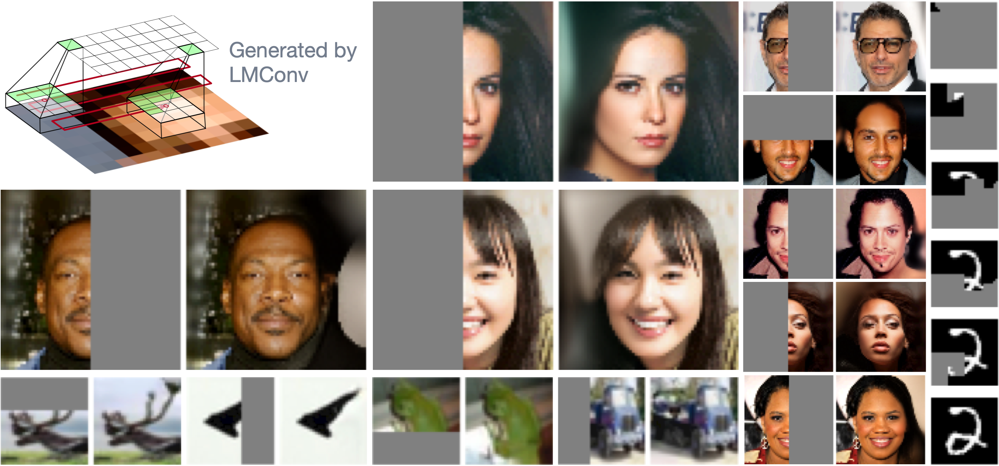
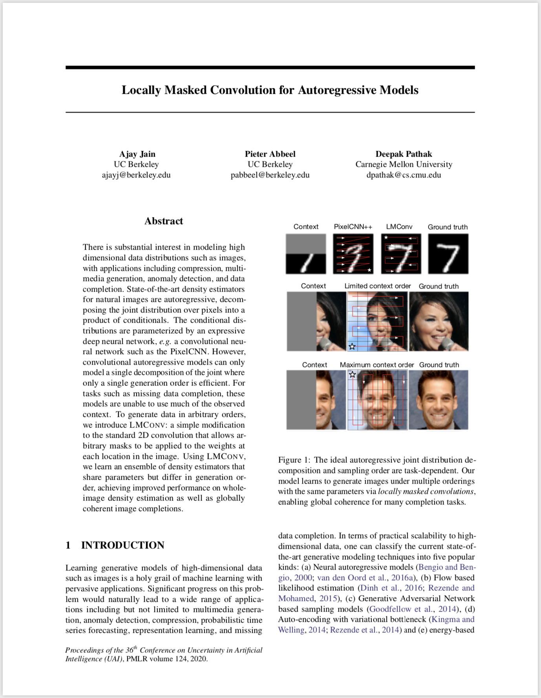

Summary: Our Locally Masked PixelCNN generates natural images in customizable orders like zig-zags and Hilbert Curves. We train a single PixelCNN++ to support 8 generation orders simultaneously, outperforming PixelCNN++ on distribution estimation and allowing globally coherent image completions on CIFAR10, CelebA-HQ and MNIST. We control the order with our proposed locally masked convolution operation, which is efficient and easy to implement via matrix multiplication.
Abstract: There is substantial interest in modeling high dimensional data distributions such as images, with applications including compression, multimedia generation, anomaly detection, and data completion. State-of-the-art density estimators for natural images are autoregressive, decomposing the joint distribution over pixels into a product of conditionals. The conditional distributions are parameterized by an expressive deep neural network, e.g. a convolutional neural network such as the PixelCNN. However, convolutional autoregressive models can only model a single decomposition of the joint where only a single generation order is efficient. For tasks such as missing data completion, these models are unable to use much of the observed context. To generate data in arbitrary orders, we introduce LMConv: a simple modification to the standard 2D convolution that allows arbitrary masks to be applied to the weights at each location in the image. Using LMConv, we learn an ensemble of density estimators that share parameters but differ in generation order, achieving improved performance on whole-image density estimation as well as globally coherent image completions.
| [GitHub] |
|

|
Citation
|
|
@inproceedings{jain2020lmconv,
title={Locally Masked Convolution
for Autoregressive Models},
author={Ajay Jain and Pieter
Abbeel and Deepak Pathak},
year={2020},
booktitle={Conference on Uncertainty
in Artificial Intelligence (UAI)},
}
|
{kind=link}
{kind=link}
{kind=link}
{kind=link}